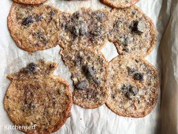

I'm going to tell you about a batch of chocolate chip cookies that tasted like someone dissolved a bar of soap in a salt lick.
You're going to laugh. That's fine. I laugh now, too. But at the time? I was furious. I mean, throw-a-wooden-spoon-across-the-kitchen furious. I mean, call-my-husband-at-work-to-complain-for-twenty-minutes furious.
The worst part? I knew better. I teach this stuff. I have a math degree. I've scaled hundreds of recipes.
But I was tired. And I was rushing. And I forgot to do the math.
So let me walk you through my disaster, the chemistry behind it, and—most importantly—the formula that will keep you from making the same mistake.
The Recipe That Looked Harmless It was a Sunday afternoon. My kids were at a birthday party. My husband was grocery shopping. I had two hours of uninterrupted kitchen time—a rare gift—and I wanted to bake.
I pulled out my favorite chocolate chip cookie recipe. The one I've made maybe 30 times. The one that always works.
Original recipe yield: 24 cookies (about 40g / 1.4oz dough per cookie)
Ingredients (gram + ounce, always both):
280g (9.9oz) all-purpose flour — about 2 1/3 cups
1/2 tsp baking soda — 2.5g (0.09oz)
1 tsp salt — 6g (0.2oz)
170g (6oz) unsalted butter — 1.5 sticks
200g (7oz) brown sugar — about 1 cup packed
100g (3.5oz) granulated sugar — about 1/2 cup
2 large eggs — 100g (3.5oz) total
2 tsp vanilla extract — 8g (0.3oz)
300g (10.6oz) semi-sweet chocolate chips — about 1 3/4 cups
I wanted to make cookies for my kids' school bake sale. The sign-up sheet said 96 cookies needed. Four dozen.
96 cookies ÷ 24 cookies = 4x scaling factor.
Easy, right? Multiply everything by 4.
Scaled recipe for 96 cookies (what I thought I should do):
Flour: 280g × 4 = 1,120g (39.5oz) — about 9 1/3 cups
Baking soda: 2.5g × 4 = 10g (0.35oz) — 2 teaspoons
Salt: 6g × 4 = 24g (0.85oz) — 4 teaspoons
Butter: 170g × 4 = 680g (24oz) — 6 sticks
Brown sugar: 200g × 4 = 800g (28.2oz) — about 4 cups packed
Granulated sugar: 100g × 4 = 400g (14.1oz) — about 2 cups
Eggs: 2 × 4 = 8 eggs
Vanilla: 8g × 4 = 32g (1.1oz) — 8 teaspoons
Chocolate chips: 300g × 4 = 1,200g (42.3oz) — about 7 cups
I measured everything. Creamed the butter and sugars until fluffy. Added eggs one at a time. Vanilla. Mixed the dry ingredients separately—flour, baking soda, salt.
Then I combined them. The dough looked… normal. A little darker than usual? Maybe. I didn't think about it.
I scooped the dough onto parchment-lined baking sheets. Twelve cookies per sheet. Eight sheets total. Into the oven at 375°F (190°C) for 11 minutes.
The kitchen started to smell amazing. Butter. Sugar. Vanilla. Chocolate.
Then the smell changed.
The First Bite That Ruined My Day The timer went off. I pulled out the first baking sheet. The cookies looked perfect—golden brown edges, slightly puffed centers, chocolate chips peeking through.
I let them cool for two minutes. Then I picked one up and took a bite.
My mouth immediately recoiled.
The first thing I tasted was salt. Not "oh, these are slightly salty" salt. "Did someone pour the entire shaker into the dough" salt. My lips puckered. My tongue burned.
Then came the baking soda. That's a specific taste—alkaline, bitter, slightly metallic. Like chewing on an antacid tablet. Or licking a battery. It coated the inside of my mouth and wouldn't go away.
I spit the cookie into the trash.
Then I tried another one, just to be sure.
Same thing. Salt bomb. Baking soda bomb. Inedible.
I stood there, holding a tray of 12 perfect-looking, absolutely disgusting cookies, and I wanted to cry.
Instead, I grabbed my calculator.
The Math That Exposed My Mistake I recalculated the scaling factor. 4x. That part was right.
But then I looked at the original recipe again. 1/2 teaspoon baking soda for 24 cookies. 4x scaling = 2 teaspoons. That's what I used.
1 teaspoon salt for 24 cookies. 4x scaling = 4 teaspoons. That's what I used.
My math was correct. My assumptions were wrong.
Here's the thing I forgot—the thing I teach my students but somehow forgot myself:
Baking soda and salt do not scale linearly.
Not for cookies. Not for cakes. Not for anything.
I went back to my notes—the ones from my 2 a.m. wedding cake disaster—and found the formula:
Leavening_new = Leavening_original × (Scaling_Factor^0.75) Salt_new = Salt_original × (Scaling_Factor^0.85)
For my 4x scaling factor:
Baking soda multiplier: 4^0.75 = 2.83
Salt multiplier: 4^0.85 = 3.24
What I should have used:
Baking soda: 2.5g × 2.83 = 7.1g (0.25oz) — about 1.4 teaspoons (not 2)
Salt: 6g × 3.24 = 19.4g (0.68oz) — about 3.2 teaspoons (not 4)
That's 30% less baking soda and 20% less salt than what I actually used.
No wonder the cookies were inedible.
The Chemistry of Baking Soda (Why It Matters) Let me explain what happened inside those cookies, because understanding the chemistry will help you remember the math.
Baking soda is sodium bicarbonate. It's a base. When you mix it with an acid—brown sugar, buttermilk, yogurt, vinegar—it creates carbon dioxide bubbles. Those bubbles make your cookies rise.
But baking soda also affects flavor and browning.
Too much baking soda (like my 30% overdose) does three things:
Alkaline taste. Your tongue has receptors for basic (high pH) compounds. Too much baking soda triggers them, creating that bitter, soapy flavor.
Over-browning. Baking soda accelerates the Maillard reaction—the chemical process that browns baked goods. My cookies looked perfect on the outside but were actually burnt on a molecular level.
Texture destruction. Too many CO2 bubbles = too much rise = bubbles pop = cookies collapse into a dense, crumbly mess. Mine were crunchy on the edges and hollow in the middle.
The same thing happens with baking powder (which is baking soda plus cream of tartar), though the effect is slightly less dramatic because the acid is built in.
The rule I teach now: For baking soda and baking powder, use the 0.75 exponent. For yeast, use 0.85. And never, ever assume 1:1 scaling.
The Salt Problem (It's Worse Than You Think) Salt is a different beast. It doesn't react chemically the same way baking soda does. But it has its own scaling problem: perception is logarithmic.
Here's what I mean.
One teaspoon of salt in a 24-cookie batch tastes pleasantly salty—enough to enhance the chocolate and butter, not enough to overpower.
Four teaspoons of salt in a 96-cookie batch does not taste four times as salty. It tastes about sixteen times as salty.
Why? Because your taste buds don't work linearly. A small increase in salt concentration produces a much larger increase in perceived saltiness. At low levels, you barely notice salt. At medium levels, it enhances flavor. At high levels, it dominates everything.
I used 4 teaspoons instead of 3.2. That extra 0.8 teaspoons—about 4.8g (0.17oz)—was enough to push the cookies from "pleasantly salty" to "call the dentist."
The salt scaling rule: Salt_new = Salt_original × (Scaling_Factor^0.85)
Scaling Factor Linear Salt Multiplier (wrong) Correct Salt Multiplier (0.85 exponent) 1.5x 1.5 1.4 2x 2.0 1.8 3x 3.0 2.5 4x 4.0 3.2 5x 5.0 3.9 6x 6.0 4.6 8x 8.0 5.8 10x 10.0 7.0 See how the correct multiplier grows more slowly? That's the math saving your taste buds.
What I Did Next (The Rescue Attempt) I had 8 baking sheets of raw cookie dough—about 6 pounds of it—sitting on my counter. Each sheet had 12 cookies scooped and ready to bake.
I couldn't unbake the first sheet. But I could salvage the remaining dough.
Option 1: Add more flour and sugar to dilute the baking soda and salt.
The problem: The dough already had too much leavening and salt. Diluting would fix the concentration, but I'd end up with 200 cookies instead of 96. And I only needed 96 for the bake sale.
Option 2: Throw it out and start over.
That hurt. Six pounds of dough. Eight eggs. Six sticks of butter. Seven cups of chocolate chips. Probably $25 worth of ingredients.
I chose Option 2.
I scraped the dough into a trash bag, washed all 8 baking sheets, and started over from scratch.
This time, I used the correct math.
Corrected recipe for 96 cookies (leavening + salt adjusted):
Flour: 1,120g (39.5oz) — same
Baking soda: 7.1g (0.25oz) — about 1.4 teaspoons
Salt: 19.4g (0.68oz) — about 3.2 teaspoons
Butter: 680g (24oz) — same
Brown sugar: 800g (28.2oz) — same
Granulated sugar: 400g (14.1oz) — same
Eggs: 8 — same
Vanilla: 32g (1.1oz) — same
Chocolate chips: 1,200g (42.3oz) — same
The dough looked slightly different this time—paler, less speckled. The raw dough tasted like cookie dough, not like chemicals.
I baked the first test sheet at 375°F for 11 minutes.
Perfect. Golden edges. Soft centers. Chocolate melted but not burnt. The salt was there—you could taste it—but it was supporting the chocolate, not fighting it.
I baked the remaining seven sheets. Cooled them on wire racks. Packed them into containers.
Ninety-six cookies. All delicious. The bake sale sold out in 20 minutes.
The Tool That Prevents This Mistake After the baking soda disaster, I added a feature to the Recipe Scaling Calculator that specifically flags leavening and salt.
The Common Mistake Box (Read This Before You Scale) Here's what I tell my students on day one of class:
Ingredients that DO NOT scale linearly:
Baking soda (use exponent 0.75)
Baking powder (use exponent 0.75)
Yeast (use exponent 0.85)
Salt (use exponent 0.85)
Spices (cinnamon, nutmeg, cayenne, cloves — use exponent 0.85)
Intense extracts (peppermint, almond, anise — use exponent 0.85)
Ingredients that DO scale linearly:
Flour
Sugar
Butter
Eggs (but round up if you get a fraction)
Milk, cream, water
Oil
Chocolate chips, nuts, dried fruit
Vanilla extract (regular strength)
The one exception: If your recipe uses baking powder AND an acidic ingredient (buttermilk, yogurt, lemon juice), the 0.75 exponent still applies. Don't try to compensate by adding more acid—that just changes the flavor.
The Emotional Aftermath (Yes, I Cried) I called my husband after I threw away the first batch. He was still at the grocery store.
"How's the baking going?" he asked.
"I ruined 96 cookies," I said. "Six pounds of dough. Eight eggs. Six sticks of butter."
"I forgot the math."
He paused. "The math you teach?"
He started laughing. Not a mean laugh—a sympathetic, I-marry-a-woman-who-once-collapsed-a-wedding-cake laugh.
"I'll buy more butter," he said.
That's why I married him.
What I Learned (For Real This Time) I've made a lot of scaling mistakes. The wedding cake collapse. The baking soda cookies. A few other disasters I'll write about another time.
Every single one of them happened because I was rushing. Or tired. Or confident in a way I hadn't earned.
The math is simple. The exponents are easy to remember (0.75 for leavening, 0.85 for salt and spices). The tools exist.
But none of that matters if you don't use the math.
So here's my advice: Write the exponents on a sticky note. Tape it to your scale. Or bookmark the calculator. Or print out the quick-reference table below.
Just don't do what I did—assume that 4x recipe means 4x everything.
Because those cookies? They're still the worst thing I've ever baked. And I once made a cake that tasted like soap.
Actually, that's a story for another day.
Quick Reference: Leavening & Salt Scaling (Laminated Card Version) For a 2x recipe:
Baking soda/powder: multiply by 1.7
Salt/spices: multiply by 1.8
For a 3x recipe:
Baking soda/powder: multiply by 2.3
Salt/spices: multiply by 2.5
For a 4x recipe:
Baking soda/powder: multiply by 2.8
Salt/spices: multiply by 3.2
For a 5x recipe:
Baking soda/powder: multiply by 3.3
Salt/spices: multiply by 3.9
The universal formulas:
Leavening_new = Leavening_original × (Scaling_Factor^0.75)
Salt_new = Salt_original × (Scaling_Factor^0.85)
Print this. Tape it inside your cabinet. Thank me later.
— Olivia
P.S. I still have the photo of those cookies somewhere. Golden brown on the outside, hollow on the inside, completely disgusting. I show it to my students on the first day of class. Nobody ever forgets the 0.75 exponent after they see that picture.
"I had a client named" Olivia